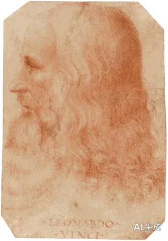

Ne(외향 직관) 주기능: 머리가 빠르고 아이디어가 무궁무진하며 기존 틀에 도전하기를 좋아한다. Ti(내향 사고) 부기능은 아이디어를 엄밀한 논증으로 다듬는다——지적 격투를 즐기지만 반복적인 일에는 인내심이 없다.

주기능인 외향 직관(Ne)은 가능성과 연결을 빠르게 찾아냅니다. 하나의 아이디어에서 열 가지 방향을 보고, 서로 무관해 보이는 것을 이어 붙입니다. 부기능인 내향 사고(Ti)는 그 발상을 논리로 검증해 쓸 만한 것만 남깁니다. 3차 기능인 외향 감정(Fe)은 사람의 반응을 읽는 데 쓰이고, 열등 기능인 내향 감각(Si)은 가장 뒤에 있어 반복되는 세부와 유지 관리가 가장 약한 지점이 됩니다.
이 조합은 변화를 만들어 내는 힘입니다. 낡은 관행을 의심하고, 토론을 즐기고, 새로운 시도를 두려워하지 않습니다. 대가는 마무리와 일관성입니다. 시작한 일이 여럿으로 늘어나고, 주변 사람들은 당신의 확신이 자주 바뀐다고 느낍니다. 그 결과 가장 중요한 아이디어가 실행되지 못한 채 남습니다.
압박이 커지면 열등 기능인 내향 감각(Si)이 불안한 형태로 올라옵니다. 몸의 이상 신호를 지나치게 의식하거나, 과거의 실수를 반복해서 되새기거나, 익숙한 것에 집착해 갑자기 보수적으로 변합니다. 성과가 나지 않는 시기에는 사람들을 자극해 논쟁을 벌여 에너지를 얻으려는 습관도 나타납니다.
회복은 리듬을 되찾는 데서 시작합니다. 잠, 식사, 운동 시간을 고정하십시오. 단순한 반복이 지루한 처방처럼 보여도 당신에게 가장 필요한 안정 장치입니다. 그다음 진행 중인 일 중 하나를 골라 끝내십시오. 끝낸 경험이 쌓이면 불안은 줄어듭니다. 중요한 결정은 밤에 하지 말고 아침으로 미루십시오.
당신은 변화와 설득이 필요한 자리에서 가장 강합니다. 신사업 기획, 마케팅 전략, 컨설팅, 영업 개발, 제품 기획, 투자 검토, 창업처럼 판을 새로 짜는 역할이 어울립니다. 회의에서 막힌 논의를 뚫고, 아무도 생각하지 못한 대안을 던지며, 협상에서 상대의 전제를 흔듭니다.
과제는 약속과 마감입니다. 재미있는 아이디어가 떠오르면 진행 중인 일을 놓는 습관이 있으므로, 새로 시작하려면 하나를 닫는 규칙을 세우십시오. 세부 실행을 꼼꼼한 동료에게 넘기는 것도 전략입니다. 또 토론에서 이기는 것과 설득하는 것은 다릅니다. 마지막에 상대가 스스로 선택했다고 느끼게 만드는 편이 결과가 오래갑니다.
당신은 대화와 자극으로 사랑을 키웁니다. 상대의 생각을 흔들고, 새로운 경험으로 이끌고, 지루할 틈을 주지 않습니다. 함께 있으면 세계가 넓어지는 느낌을 주는 사람입니다. 다만 안정과 예측 가능성을 원하는 상대에게는 당신의 변화무쌍함이 불안으로 다가갑니다.
갈등이 생기면 논쟁을 이기려는 충동을 내려놓으십시오. 상대의 말을 반박할 지점을 찾기보다, 그 말 뒤의 감정을 찾으십시오. 약속을 지키는 일상적인 행동이 당신의 진심을 증명합니다. 재미있는 계획보다 지키는 약속이 관계를 오래 유지시킵니다.